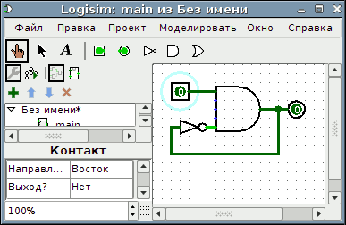
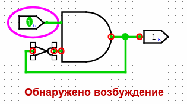

Ошибки генерации
Механизм распространения сигналов, который обычно функционирует в фоновом режиме и скрыт от пользователя, становится наглядным при проектировании цепей с обратными связями, склонных к паразитным автоколебаниям (генерации).

На иллюстрации выше схема находится в стабильном исходном состоянии. Однако, если переключить входной сигнал на 1, цепь фактически замкнётся в бесконечный логический цикл. Через короткое время система принудительно остановит вычисления и выведет на экран сообщение «Обнаружена генерация», сигнализирующее о возникновении неконтролируемых автоколебаний.

На холсте зафиксируются логические уровни, актуальные строго на момент аварийной остановки симуляции. Визуально эти значения могут казаться противоречивыми законам логики: например, на снимке экрана вентиль И выдаёт единицу, несмотря на нуль на одном из входов. Аналогичным образом можно застать инвертор (НЕ) в состоянии, когда на его входе и выходе одновременно присутствует логическая 1. Это нормальное явление, являющееся прямым следствием того, что процесс трансляции сигнала по цепи был заморожен на промежуточном микрошаге.
Программа выделяет красным цветом каждый контакт и проводник, предположительно вовлечённый в петлю генерации. Если проблемный участок находится внутри вложенного компонента, система обведёт красной рамкой весь графический корпус соответствующей подсхемы.
При обнаружении автоколебаний внутренний движок полностью блокирует дальнейшее моделирование проекта. Чтобы возобновить работу, необходимо устранить логическую ошибку в цепи (или добавить элементы синхронизации), а затем вручную перезапустить симулятор, активировав пункт главного меню | Моделирование | → | Моделирование включено |.
Алгоритм детекции автоколебаний основан на простом эвристическом правиле: если для стабилизации схемы требуется аномально большое количество внутренних итераций пересчёта, движок прерывает процесс и диагностирует генерацию. Узлами, вызывающими проблему, считаются те компоненты, логическое состояние которых менялось в течение последних 25% выполненных итераций.
Из-за специфики этого алгоритма программа может выдать ложноположительное предупреждение о генерации при анализе экстремально объёмных и глубоких проектов (хотя такая схема должна быть значительно больше типичных учебных задач). Если вы абсолютно уверены в корректности топологии вашей цепи, вы можете увеличить лимит допустимых итераций пересчёта до срабатывания защиты на вкладке «Моделирование» в окне «Параметры проекта».